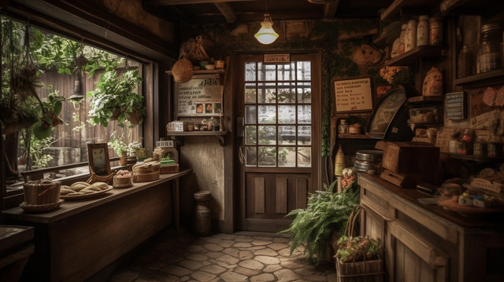
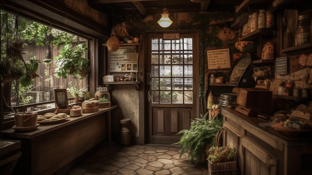

About Sri Lankan Ceylon Coffee
Sri Lankan Ceylon Coffee is a hidden gem in the world of specialty coffee. Known for its distinct flavor profile and rich cultural heritage, this coffee originates from the lush hills of Sri Lanka, where ideal climatic conditions and fertile soils provide the perfect environment for coffee cultivation.
At Cozy Coffee Shop, we celebrate this rich legacy by serving 100% authentic Sri Lankan Ceylon Coffee. Whether you're savoring a hot espresso or indulging in a creamy latte, you'll experience the essence of Sri Lanka in every sip.
Our Menu

Espresso
A bold and rich coffee for those who love intensity.
$3

Latte
Creamy and smooth, paired with a rich espresso base.
$4

Cappuccino
A delightful balance of espresso, steamed milk, and foam.
$4.5

Mocha
A chocolate-infused coffee for a sweet, indulgent experience.
$5
Why Humans Use Coffee
Coffee has been an integral part of human culture for centuries. It is not just a beverage but an experience that awakens the senses and fuels productivity. Many people begin their mornings with a cup of coffee to feel energized and ready to face the day. Coffee's high caffeine content helps improve focus, alertness, and memory, making it a popular choice for students and professionals alike.
Socially, coffee plays a significant role in bringing people together. Cafés and coffee shops are common gathering places for meetings, dates, and social interactions. The aroma of freshly brewed coffee creates an inviting atmosphere, making it an ideal companion for conversations and relaxation. Furthermore, coffee's antioxidant properties contribute to its health benefits, including reducing the risk of certain diseases and promoting longevity.
Whether for its taste, cultural significance, or mental and physical stimulation, coffee remains an essential part of daily life for millions worldwide.
Advantages of Coffee
- Boosts energy and enhances mental alertness.
- Rich in antioxidants, promoting overall health.
- Improves physical performance during workouts.
- Aids in social interactions and cultural bonding.
Disadvantages of Coffee
- Excessive consumption can cause insomnia and anxiety.
- May lead to dependence and withdrawal symptoms.
- Can increase heart rate and cause jitteriness in some individuals.
- May lead to dehydration if consumed in large amounts.
Contact Us |
I am an undergraduate student specializing in Information and Communication Technology (ICT) with a strong passion for technology and software development. I am particularly focused on mobile app development, IoT, and website development. Over the years, I have gained hands-on experience working on various projects, ranging from simple Android applications to advanced IoT systems. One of my key interests is in developing applications that improve the user experience and make everyday tasks easier, such as my ongoing projects, including an AI dictionary app, a cricket score system app, and a Smart Accident Alert System integrated with fire detection and emergency services. In addition to my academic pursuits, I am also deeply involved in creating functional hardware projects, such as my ESP32-based systems for environmental monitoring and accident detection. These projects allow me to combine my knowledge of software and hardware, making me a well-rounded developer. I enjoy learning new skills and technologies and continually seek out opportunities to apply my knowledge in real-world scenarios. My goal is to use my skills to develop innovative solutions that have a meaningful impact on users and society. In the future, I aim to pursue a career in technology, focusing on mobile and web development and IoT systems. |